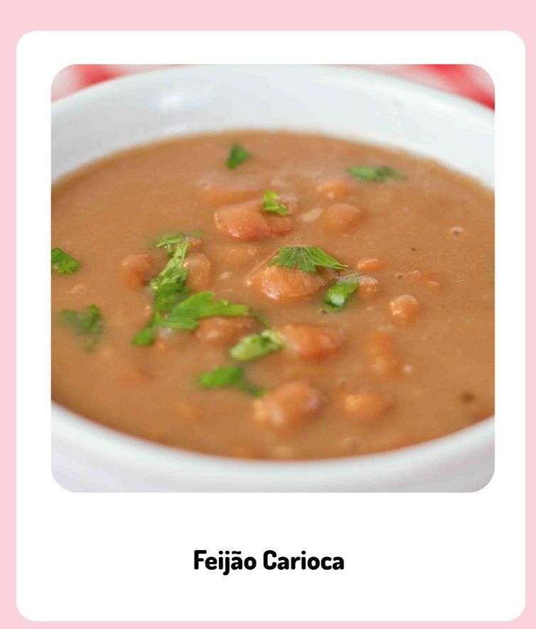

| 
|
|
Ingredientes:
- 1/2 kg de feijão carioca
- 4 De alho
- carne seca
- 2 tabletes de caldo de galinha ou carne
- 4 folhas de louro
- 1 colher (sopa) rasa de óleo
- 1 colher (chá) colorau
- 1 litro de água
- 1/2 cebola picada
|
|
|
Modo de preparo:
- Na panela de pressão (4 litros) coloque os dentes de alho, juntamente com o óleo e tablete de caldo de sua preferência e mexa até dissolver tudo.
- Logo após coloque a carne seca em cubos, a cebola, e o feijão.
- Após refogar o feijão, coloque a água, o colorau e mexa bem, de modo que os ingredientes se misturem.
- Tampe e espere pegar pressão, depois conte 25 minutos.
- Agora está pronto para servir!
|
|